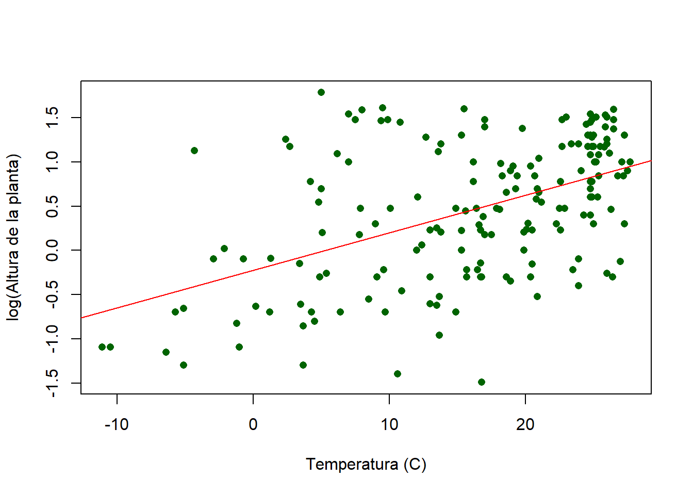
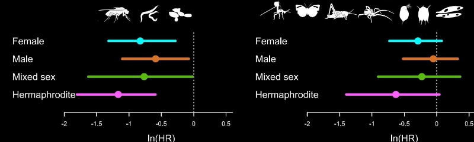

Statistics
Estas páginas contienen algunas introducciones a una amplia gama de análisis estadísticos comúnmente utilizados en las ciencias ambientales.
Pruebas de hipótesis simples:
- Pruebas t de una muestra - contrastando un parámetro de muestra con un parámetro de población.
- Pruebas t de muestras independientes - contrastando las medias de dos muestras.
- Pruebas t pareadas - contrastando dos grupos cuando los datos están apareados.
Modelos lineales - LM:
Estas páginas contienen algunas introducciones respecto de los modelos lineales comúnmente utilizados que prueban la respuesta de una variable dependiente continua frente a una o más variables predictoras que pueden ser continuas o categóricas. Ten en cuenta que estos se denominan diferentes técnicas (por ejemplo, regresión vs. ANOVA) debido al uso común en la literatura que encontrarás; todos ellos involucran el mismo marco de modelado lineal.
El análisis de varianza (ANOVA)
Es una de las técnicas más utilizadas en las ciencias biológicas y ambientales. El ANOVA se utiliza para contrastar una variable dependiente continua y en diferentes niveles de una o más variables independientes categóricas x. Las variables independientes se denominan factor o tratamiento, y las diferentes categorías dentro de ese tratamiento se denominan niveles. En este módulo, comenzaremos con el diseño más simple, aquellos con un solo factor.
Donde se utilizaría una prueba t-test de muestras independientes para comparar las medias de grupos en dos niveles, el ANOVA se utiliza para la comparación de medias de grupos >2, o cuando hay dos o más variables predictoras (ver ANOVA: factorial). La lógica de esta prueba es esencialmente la misma que la prueba t-test: compara la variación entre grupos con la variación dentro de los grupos para determinar si las diferencias observadas se deben al azar o no.
Modelos lineales generalizados - GLM:
Los modelos lineales generalizados (GLM) se utilizan cuando la distribución de los datos no se ajusta a las suposiciones de los modelos lineales, específicamente las suposiciones de residuos distribuidos normalmente y ausencia de relación entre la varianza y la media (por ejemplo, datos de presencia/ausencia, recuento o altamente sesgados).
- Modelos lineales generalizados 1: Introducción y datos binomiales
- Modelos lineales generalizados 2: Datos de recuento
- Interpretación de coeficientes en glms
Modelos mixtos:
Los modelos mixtos son aquellos que tienen una mezcla de efectos fijos y aleatorios. Los efectos aleatorios son factores categóricos cuyos niveles han sido seleccionados entre muchos posibles niveles, y el investigador desea hacer inferencias más allá de los niveles elegidos. Es un concepto complicado, pero imagina que contrastas dos tipos de hábitat (bosque y pradera) muestreando cinco sitios dentro de cada uno, y cinco medidas replicadas dentro de cada sitio. El tipo de hábitat es un factor fijo en el que el investigador solo está interesado en esos dos niveles de tipo de hábitat. Si los cinco sitios se seleccionaron de una colección más grande de sitios posibles, entonces el sitio se considera un efecto aleatorio con 10 niveles.
- Modelos mixtos 1: Modelos mixtos lineales con un efecto aleatorio.
- Modelos mixtos 2: Modelos mixtos lineales con varios efectos aleatorios.
- Modelos mixtos 3: Modelos mixtos lineales generalizados.
Análisis de datos categóricos:
Algunas pruebas comúnmente utilizadas para contrastar las frecuencias de observaciones entre variables categóricas.
Meta-análisis:
EL meta-análisis se utilizan cada vez más en ecología, evolución y ciencias ambientales para encontrar patrones generales entre muchos estudios, resolver controversias entre estudios conflictivos y generar nuevas hipótesis. Estos tutoriales ofrecen una introducción para realizar meta-análisis con el paquete R metafor.
- Meta-análisis 1: Introducción y cálculo de tamaños de efecto.
- Meta-análisis 2: Modelos de efecto fijo y efecto aleatorio.
- Meta-análisis 3: Modelos más complejos.

Otras pruebas estadisticas:
Análisis de potencia: cálculo de potencia y determinación del tamaño de muestra.
Introducción a mvabund: análisis basado en modelos de datos de abundancia multivariada.